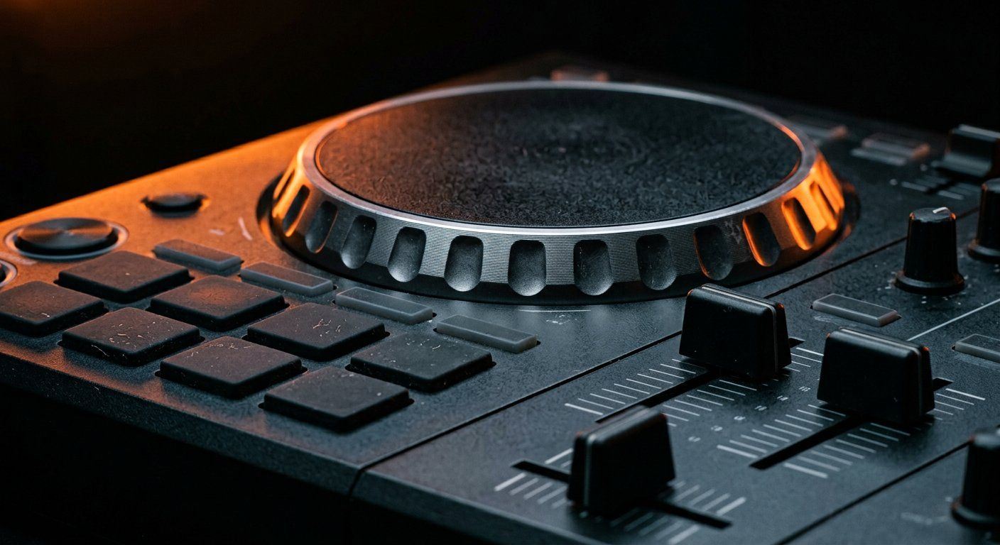

Pioneer DDJ-FLX10 Review 2026: The Ultimate 4-Deck Controller for Modern DJs
Four channels, full-size jogs, stems control and a club-format layout. Who the FLX10 is actually for — and who should keep the money.

Disclosure: This page uses affiliate links. We may earn a commission at no extra cost to you. Full disclosure →
The FLX10 replaced the DDJ-1000, and it kept what made that controller popular: full-size CDJ-style jogs, four channels, and a layout that maps almost directly onto a club booth. What it adds is stems control and a tighter integration with rekordbox's newer features. At around $1,729 it is a professional purchase, not an aspirational one — the question is not whether it is good, but whether you are playing enough to justify it.
Pro-Grade Hardware and Precision Jog Wheels
The first thing you notice about the DDJ-FLX10 is its imposing build. Unlike plastic-heavy budget controllers, the FLX10 utilizes a reinforced chassis and high-quality potentiometers that feel substantial under the fingers. The centerpiece of the experience is the large, high-resolution jog wheels. In 2026, tactile feedback is more important than ever, and these wheels offer the precise resistance and "weight" needed for tight scratching and nuanced pitch bending. The layout is intentionally mirrored after the industry-standard club gear, meaning the muscle memory you develop on the FLX10 translates directly to a booth full of CDJ-3000s. From the sturdy crossfader to the responsive performance pads, every element is engineered for reliability during high-pressure live sets.
Mastering the 4-Deck Workflow
While most DJs stick to two decks, the DDJ-FLX10’s 4-deck capability unlocks a new level of creativity. Having four independent channels allows for seamless mashups, complex layering of acapellas, and effortless transitions without cutting the energy of the dance floor. The deck switching logic is intuitive, allowing you to toggle between pairs of decks without losing your place in the mix. This is particularly useful for 2026's trend of "live remixing," where DJs layer rhythmic loops from two tracks while prepping a third and fourth for a dramatic drop. The dedicated channel faders and EQ knobs for all four channels ensure that you have total sonic control over every element of your arrangement, eliminating the need to constantly menu-dive in your software.
Seamless Software Integration: Rekordbox and Serato
One of the FLX10's strongest selling points is its "dual-threat" compatibility. It works natively with both Rekordbox and Serato, making it the perfect tool for DJs who refuse to be locked into a single ecosystem. Smart Fader and Smart CFX are the two features open-format DJs actually use: one moves the crossfader, the channel faders and the EQ together so a track swap holds its energy without you managing four controls at once, and the other applies an effect as the fader travels. Both are performance shortcuts for the moment a request lands mid-blend, not a replacement for knowing your EQ. The built-in audio interface carries a balanced master and booth output, which is what keeps the signal clean when you are feeding a PA rather than a pair of desktop monitors.
Price, Value, and Long-Term Investment
Launch SRP was $1,599 excluding tax, and US retailers listed about $1,729 in our October 2026 search, so the DDJ-FLX10 is a significant investment. However, when compared to the cost of buying separate professional players and a mixer, the value proposition is clear. You are essentially getting a club-standard layout and a high-end sound card in a single, portable unit. For the aspiring professional, the FLX10 removes the need for multiple hardware upgrades; it is a "forever controller" that can carry a DJ from their first house party to their first paid club residency. While budget options like the FLX4 are great for learning, the FLX10 provides the headroom and durability required for professional work, making the cost-per-year of ownership surprisingly low for those who use it as a primary tool of their trade.
Controller Comparison Matrix
| Feature | Pioneer DDJ-FLX4 | Pioneer DDJ-FLX10 | Pioneer DDJ-1000 (Legacy) |
|---|---|---|---|
| Deck Count | 2 Decks | 4 Decks | 4 Decks |
| Jog Wheel Size | Small | Large (Club Size) | Large (Club Size) |
| Software | Rekordbox/Serato | Rekordbox/Serato | Rekordbox Only |
| Build Quality | Plastic/Lightweight | Professional/Heavy | Professional/Heavy |
| Approx. Price | $299 | $1,599 | $1,699 (Used/Old Stock) |
| Best For | Beginners | Prosumers/Pros | Rekordbox Purists |
Pros & Cons
Pros
- Built-in 4-deck layout — rare at this price point
- Works with Rekordbox AND Serato out of the box
- 8" large jog wheels with key display on top
- Beat FX panel mirrors professional DJM mixers
- Performance pads (16 per deck) for sampling and remix
Cons
- Serato Pro subscription required for stems feature
- ~$1,199 — expensive vs DDJ-FLX6 at $699
- No motorised jog wheels (important for scratch DJs)
- Bulky for travel — 5.7 kg weight
Key Specs
Quick Verdict
Best 4-deck controller in this guide — the DDJ-FLX10 gives professionals a club-ready 4-deck setup without buying standalone CDJs. Multi-software support is a bonus. Search Pioneer DDJ-FLX10 controller on Amazon →
Shop on Amazon
Check current Pioneer DDJ-FLX10 price on Amazon — often on sale.
Also Available on zZounds
Four-channel flagship controller — financing available.
Who Should Buy This?
Pioneer DDJ-FLX10 Review 2026 is the right choice if you want professional-grade quality that will last through years of regular use. It suits DJs who have moved past entry-level gear and need something that can handle club environments and regular touring.
- Ideal for: intermediate to advanced DJs upgrading from a first controller
- Not ideal for: first-time buyers on a tight budget who should start with a more forgiving entry-level option
- Best purchased from: an authorised retailer with warranty coverage
The FLX10 Edge: Advanced Performance Features
The DDJ-FLX10 isn't just an iterative update; it introduces professional-grade features that bridge the gap between performance controllers and industry-standard CDJ/DJM setups. Unlike the smaller FLX4, the FLX10 features 7-inch full-size jog wheels with integrated On-Jog Displays. These screens provide essential track data, including waveform, playback position, and even artwork, allowing you to keep your eyes on the deck rather than your laptop screen.
The FX section has seen a massive overhaul. You gain access to Part Isolation FX, which allows you to manipulate vocals, drums, and instruments independently — useful for acapella drops and for pulling the bass out of an incoming track without a filter sweep. The dedicated Beat FX section is laid out like a DJM mixer, so a DJ who knows a club mixer already knows where the effects are, and the FLX6 has no equivalent: two channels, no stems, no booth output.ring that muscle memory built on the FLX10 translates perfectly to club gear.
The Club Prep Workflow
The FLX10 is designed as the ultimate club-prep machine. With its 4-deck control and expanded I/O, you can replicate a professional club environment at home. The controller includes dual USB-C ports for seamless DJ handovers, and the inclusion of DMX terminal support allows you to control lighting fixtures directly via rekordbox, making it the only piece of gear you need for mobile gigs or studio livestreams.
Upgrade Path: Where Do You Fit In?
| Controller | Best For | Why Upgrade to FLX10? |
|---|---|---|
| DDJ-FLX4 | Beginners/Bedroom | Need 4-deck mixing, XLR outputs, and jog screen data. |
| DDJ-FLX6 | Intermediate | FLX10 offers better build quality, DMX support, and superior FX. |
| DDJ-REV7 | Turntablists | REV7 is for scratch DJs; FLX10 is for club/event mixing. |
Ready to Upgrade?
If you're looking to take your sets to the professional level, the DDJ-FLX10 is the gold standard for 2026. Check the latest pricing below.
Before you buy: five quick checks
Price is the easy part. These are the checks that decide whether the purchase still looks sensible six months in.
Frequently Asked Questions
Is the Pioneer DDJ-FLX10 worth the price?
Yes, for intermediate to advanced DJs. The FLX10's hybrid mixing feature (connects to both a laptop and a standalone media player simultaneously) is unique in its price range. Its 4-deck layout, performance pads, and Beat FX section match club gear more closely than entry controllers. Budget DJs should look at the DDJ-FLX4 instead.
What software is included with the Pioneer DDJ-FLX10?
The DDJ-FLX10 bundles with both rekordbox and Serato DJ Pro — full versions of both, not lite editions. This $99/year value makes the controller effectively cheaper than it appears. It also works with Virtual DJ (separate purchase) via MIDI mapping.
How does the DDJ-FLX10 hybrid mixing work?
Hybrid mixing lets you connect a Pioneer CDJ or media player to the FLX10's analog inputs while also running DJ software on a laptop. You can simultaneously mix software tracks (on the laptop) with hardware tracks (from USB drives in connected players). This bridges club and software workflows in a single controller.
DDJ-FLX10 vs DDJ-1000 — which is better?
The DDJ-1000 ($1,199) is a rekordbox-only, standalone-capable controller with larger jog platters (206mm, identical to club CDJ standard). The DDJ-FLX10 (about $1,729 in our search) is multi-software, hybrid mixing, 4-deck. If you prioritize jog feel and rekordbox purity, DDJ-1000. For multi-software flexibility and hybrid use, DDJ-FLX10.
Does the Pioneer DDJ-FLX10 have standalone mode?
No. The DDJ-FLX10 requires a laptop running DJ software — it does not have an onboard processor for standalone play. Standalone controllers (Denon SC6000, Pioneer XDJ-RR) are a different product category. The FLX10's hybrid feature connects to an external hardware player, not eliminate the laptop requirement.